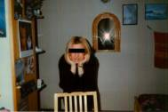
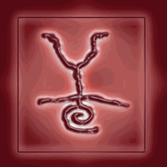
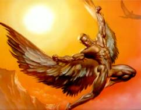
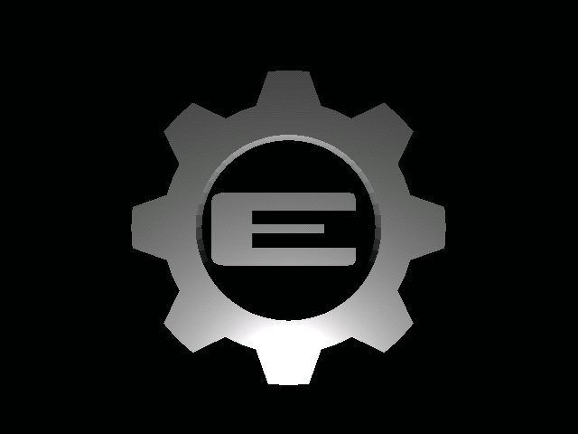

La ridente cittadina di MONZAÓ (mah!)
è lieta di presentare:
IL DYLAN
Progressive,progressive e ankora
progressive !!!
KI SIAMO à IL Dylan nasce nel lontano 1999 da un
idea della
stupenda
(?!) Iside, fu lei a incitare gli altri ( o meglio rompergli i koglioni kuanto
bastava) per far si ke il suo sogno diventasse realtà…
Kuando
finalmente il lokale fu inaugurato un ‘ altra pietra era messa, finalmente la
progressive merd poteva dilagare anke in Monza. Sin dai primi mesi infatti si
notarono gli skonvolgenti mutamenti dei ragazzi, forse troppo deboli per poter
resistere a kuella musika kosi martellante e nello stesso tempo priva di
senso…I kontagiati esibivano osceni okkialetti da sole metallizzati e magliette
ke non lascivano spazio all’ immaginazione. Iside era kosì felice della sua
kreazione ke kuando le kiedevano ke kosa volesse di piu’ diceva: "Vorrei
un sito del DYLAN". Kuesto ke leggete è il suo sogno ! :°( [sono
kommosso!]
DOVE SIAMO à Non lo so assolutamente, anzi, diciamo
ke siamo a Monza, ma non kiedetemi l’ indirizzo… Provate a kiedere a kuel
vekkio sul ponte ke vi punta SEMPRE il dito kontro kon sguardo bieko [RobyR
;)].
KE MUSIKA FACCIAMO à C’è bisogno di kiedere ??? Progressive, Progressive, Progressive,
Progressive, Progressive, Progressive, Progressive, Progressive, Progressive,
Progressive, Progressive, Progressive. Ah, ve l’ ho detto ke facciamo
Progressive ?
I DJ’ S à Ogni sera è uno spettakolo kon i
nostri DJ Legolino e DJ Elfozzo ( ki ???), senza dimentikare l’ uomo luce (
kolui ke è adetto alle luci) Roby "ke mi vuoi dire" R. Kon loro
nessuno si annoia, neppure kuelli stronzi ke si kannano tutte le sere perkè fa
tanto grandi.
LE FOTO à Ekkole sono kuelle ke stavate
aspettando, la Iside e i DJ solo per voi… :D

1a.
La Iside in tutto il suo splendore, okkio pero’ se la tira da matti !!!
Frasi
celebri: "I miei mi hanno stakkato il modem", "Uff",
"Ke hai
detto
?"

2a.
Ekko a voi DJ Legolino, il piu’ bravo dei due dj [elfuz =)]
Frasi
celebri: "ke signifika ?", "Non ci kapisko nulla di sta
roba!", "Mi
passi
la foto di sta kua ???"

3a.
Signori e signore il grande DJ Elfozzo, Kolui ke ogni volta ke mette un
disko
progressivivo deve andare assolutamente in bagno perkè gli
prende
male. Frasi Celebri: "[=)]", "ao", "sto
sbrokkando…"

4a.
L’ uomo luce in tutto il suo splendore, forse troppo visto ke ha
abbagliato
l’ obbiettivo… Frasi celebri: Legolino… ke fai bakkaji?? ;)
RINGRAZIAMENTI à Innanzi tutto un saluto a tutto il MARE, e in partikolar modo all’
elfo, a roby, alla iside ( ke se la tira kmq…) e a me, il vostro LOGO
(eheheheh). Un ringraziamento speciale a Cloud e Ranma per i botti che
sostengono #mare. Ringraziamo Drag0nman per la sua “scappatella” a Torino. A
Maxims… non ti fai + vedere??? Saluto in oltre kuel lamer del kazzo del Vampiro
( ankora kon le 11enni ?) , kuella pakkista di irene e Sergio (un amiko ke
presto andra al MARE arghhhhhh!!!!). Mi vorrei inoltre skusare kon il lokale di
Monza ke abbiamo messo in ridikolo e per fare cio’ l’ unika frase ke mi viene
in mente è:" perkè non kiudete li a Monza e aprite un lokale in alaska ???
, li vorrei vedere gli eskimesi kon kuelle magliettine leggere e attillate kon
kuel kazzo di freddo :D).

Page designer e testi: LegolasÓ ,Correzione page RobyRÓ ,Tutto
il resto: ElfoscuroÓ